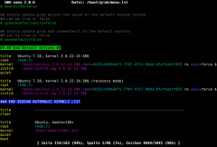
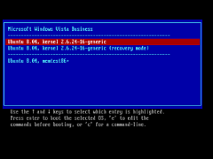
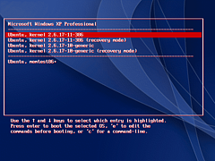

menu.lst
Hinweis:
Der ab Ubuntu 9.10 als neuer Standard verwendete Bootloader GRUB 2 wird in einem eigenen Artikel behandelt. Der hier beschriebene Vorgänger wird inzwischen auch als "GRUB Legacy" bezeichnet. Der Artikel Grub 2 durch Grub ersetzen erläutert, wie man die ältere GRUB-Version dennoch nutzen kann.
Achtung!
Fehler bei der Konfiguration des Bootmanagers können zu einem unbenutzbaren System führen.
Zum Verständnis dieses Artikels sind folgende Seiten hilfreich:
Die Datei /boot/grub/menu.lst erfüllt zwei Funktionen:
Hier ist einerseits die Konfiguration für den Bootloader GRUB gespeichert. Beim Start von GRUB wird die menu.lst gelesen, und das Bootmenü wird entsprechend aufgebaut. GRUB ignoriert alle mit einer Raute beginnenden Zeilen.
Zusätzlich enthält die menu.lst Informationen für das Skript update-grub. Dieses Skript dient dazu, die Menüeinträge in der menu.lst automatisch zu erstellen. Das Skript wird z.B. bei der Installation eines neuen Kernels ausgeführt. update-grub liest auch manche Zeilen ein, die mit einer Raute beginnen.
menu.lst ist eine reine Textdatei, zur Bearbeitung muss sie also in einem Editor mit Root-Rechten [3] geöffnet werden.
Aufbau der Datei¶
Die menu.lst ist durch besondere Kennzeichner in mehrere Bereiche gegliedert. Es ist wichtig, diese Bereiche zu kennen und deren Aufgabe zu verstehen, damit Änderungen an dieser Datei zum gewünschten und dauerhaften Ergebnis führen. Folgende Kennzeichner existieren:
### BEGIN AUTOMAGIC KERNELS LIST
## ## Start Default Options ##
## ## End Default Options ##
### END DEBIAN AUTOMAGIC KERNELS LIST
Zunächst ist wichtig, dass der komplette Bereich zwischen den äußeren Kennzeichnern vom System (update-grub) verwaltet wird. In diesem Bereich dürfen daher nur bedingt Änderungen vorgenommen werden.
Achtung!
Es ist nicht sinnvoll, innerhalb dieser Bereiche eigene Menüeinträge zu platzieren oder Änderungen an den Menüeinträgen direkt vorzunehmen, da diese spätestens beim nächsten Kernelupdate verschwinden würden. Sinnvoll sind hier nur Änderungen an den vorgegebenen Optionen. Dadurch lassen sich die automatisch generierten Einträge indirekt beeinflussen. Eigene Menüeinträge müssen vor oder nach dem äußeren Block platziert werden.
Desweiteren muss die besondere Rolle des Kommentarzeichens # beachtet werden. Bei der menu.lst handelt es sich um eine Steuerdatei, die eigentlich nur von GRUB gelesen wird. Grub ignoriert dabei Zeilen, die mit mindestens einem Kommentarzeichen (#, Raute) beginnen. Im gerade beschriebenen inneren Bereich werden nun aber zusätzliche Parameter für das Hilfsprogramm update-grub gespeichert. Für GRUB sind diese Parameter aber unverständlich. Damit nun keine Syntaxfehler auftreten, wurde vereinbart, dass Parameter für update-grub im gekennzeichneten Bereich stehen müssen und jeweils mit einem einzelnen Kommentarzeichen beginnen. Tatsächliche Kommentare in diesem Bereich sollten dementsprechend mit mindestens zwei Kommentarzeichen beginnen.
Zusammenfassend gilt:
|  |
| /boot/grub/menu.lst |
Zeilen mit doppelten oder mehr
##sind immer Kommentare.Zeilen mit einer einfachen
#innerhalb des inneren Blocks sind Anweisungen für update-grub, wenn der Raute eines der Schlüsselwortealternative, altoptions, defoptions, groot, howmany, kopt, lockalternative, lockold, memtest86, nonaltoptions, recovery, savedefault, updatedefaultentry, xenhopt, xenkoptfolgt.Sonstige Zeilen, die mit einem einfachen
#beginnen, sind Kommentare.Zeilen ohne
#sind Optionen für GRUB selber.
Beim Bearbeiten der menu.lst sollte man einen Editor mit entsprechender Syntaxhervorhebung verwenden.
Die Abschnitte im Einzelnen¶
Achtung!
GRUB bezeichnet die Festplattenpartitionen mit (hdx,y), wobei X die Nummern der Festplatte und Y die Partition sind. Es wird hier immer mit 0 bei der Zählung begonnen:
| Partition | Linux-Device-Bezeichnung | GRUB-Bezeichnung |
| x. Partition auf der 1. Platte | /dev/sdax oder /dev/hdax | (hd0,x) |
| x. Partition auf der 2. Platte | /dev/sdbx oder /dev/hdbx | (hd1,x) |
| ... | ... | ... |
| 1. Partition auf der x. Platte | /dev/sdx1 oder /dev/hdx1 | (hdx,0) |
| 2. Partition auf der x. Platte | /dev/sdx2 oder /dev/hdx2 | (hdx,1) |
| ... | ... | ... |
Zu beachten ist auch, dass die Nummerierung von logischen Laufwerken in einer erweiterten Partition  immer bei 5 (Linux-Device-Bezeichnung) bzw. 4 (GRUB-Bezeichnung) beginnt - unabhängig von der Anzahl der vorhandenen primären Partitionen.
immer bei 5 (Linux-Device-Bezeichnung) bzw. 4 (GRUB-Bezeichnung) beginnt - unabhängig von der Anzahl der vorhandenen primären Partitionen.
Die GRUB-Bezeichnung wird fortlaufend vergeben, d.h. bei fehlender Platte sda erhält sdb die niedrigste GRUB-Bezeichnung (hd0). Dieses Verhalten kann zu Problemen führen, wenn z.B. eine Platte dauerhaft aus dem System entfernt wird.
Beispielhaft werden nun anhand einer typischen menu.lst die einzelnen Abschnitte erklärt:
Kopfzeilen¶
In den Kopfzeilen werden die Einstellungen für GRUB selbst definiert. So lässt sich hier ein Passwort setzen, man kann den automatisch zu bootenden Eintrag definieren usw. Die einzelnen Variablen sind:
default - Nummer des Eintrages, der automatisch gestartet wird, bei
0(Null) beginnend. Statt Nummer geht auch saved, wobei sich GRUB den zuletzt ausgewählten Eintrag merkt, bei dem die savedefault-Option (s.u.) gesetzt ist. Zu beachten ist, dass der angegebene Wert nicht korrigiert wird, wenn sich die Anzahl der Menüeinträge im Abschnitt "AUTOMAGIC KERNELS LIST" - z.b. durch Sicherheitsupdates - verändert. Von daher sollte dieser Wert möglichst immer auf0stehen. Soll ein anderes Betriebssystem standardmäßig gestartet werden, so ist es besser, dessen Menüeintrag an die erste Stelle zu verschieben, also vor den Kommentar "BEGIN AUTOMAGIC KERNELS LIST". Siehe auch Aufbau der menu.lst.
timeout - Die Zeit (in s), nach deren Ablauf automatisch der Default-Eintrag gestartet wird.
hiddenmenu - Soll das GRUB-Menü gezeigt werden?
color - Die Schriftfarben können hier festgelegt werden.
password - ein GRUB-Passwort. Entweder im Klartext oder als md5 Prüfsumme hinterlegt.
Beispiel:
# menu.lst - See: grub(8), info grub, update-grub(8) # grub-install(8), grub-floppy(8), # grub-md5-crypt, /usr/share/doc/grub # and /usr/share/doc/grub-doc/. ## default num # Set the default entry to the entry number NUM. Numbering starts from 0, and # the entry number 0 is the default if the command is not used. # # You can specify 'saved' instead of a number. In this case, the default entry # is the entry saved with the command 'savedefault'. # WARNING: If you are using dmraid do not change this entry to 'saved' or your # array will desync and will not let you boot your system. default 0 ## timeout sec # Set a timeout, in SEC seconds, before automatically booting the default entry # (normally the first entry defined). timeout 10 ## hiddenmenu # Hides the menu by default (press ESC to see the menu) #hiddenmenu # Pretty colours #color cyan/blue white/blue ## password ['--md5'] passwd # If used in the first section of a menu file, disable all interactive editing # control (menu entry editor and command-line) and entries protected by the # command 'lock' # e.g. password topsecret # password --md5 $1$gLhU0/$aW78kHK1QfV3P2b2znUoe/ # password topsecret
GRUB akzeptiert zahlreiche weitere Optionen, die an dieser Stelle nicht alle besprochen werden können. Eine umfangreiche Dokumentation befindet sich zum Beispiel bei der Illustrated Dual Boot Site  .
.
Unter anderem gibt es die Möglichkeit, mit dem Kommando setkey das Tastaturlayout der GRUB-Konsole zu ändern. Hierzu lädt man die im Anhang  gespeicherten Tastendefinitionen herunter und fügt sie im Kopfbereich in die menu.lst ein.
gespeicherten Tastendefinitionen herunter und fügt sie im Kopfbereich in die menu.lst ein.
Einträge vor der automatischen Liste (optional)¶
Besitzt man ein Dual-Boot-Computer-System, sprich z.B. Windows und Ubuntu parallel installiert, und möchte vorwiegend unter Windows arbeiten, so will man eventuell, dass Windows an erster Stelle im Boot-Manager erscheint. Der richtige Platz hierfür ist dieser:
# Put static boot stanzas before and/or after AUTOMAGIC KERNEL LIST # This entry automatically added by the Debian installer for a non-linux OS # on /dev/hda2 title Microsoft Windows XP Professional (Oberhalb der Linux Einträge) root (hd0,1) savedefault chainloader +1
Optionen für update-grub¶
In diesem Teil der Konfigurationsdatei werden die Optionen gesetzt, die update-grub nutzt, um die menu.lst neu zu schreiben. Doppelte ## sind tatsächlich Kommentare, einfache # sind Optionen für update-grub. Die Kommentarzeichen müssen immer erhalten bleiben.
Die einzelnen Variablen sind
kopt - Die Boot Parameter für die Standard Kernel.
groot - Das Standard Root Laufwerk für GRUB.
alternative - Soll update-grub Starteinträge für den Recovery Modus anlegen?
lockalternative - Soll bei der Auswahl des Recovery Modus das GRUB Passwort (s.o.) abgefragt werden?
defoptions - Zusätzliche Optionen, die an die Standard Booteinträge gehängt werden.
altoptions - Zusätzliche Optionen, die an die Recovery Modus Einträge gehängt werden.
howmany - Anzahl der Kernel, die update-grub berücksichtigen soll.
memtest - Soll ein Eintrag zum Starten des Speichertests hinzugefügt werden?
updatedefaultentry - Soll update-grub die Nummer des zu startenden Kernels automatisch anpassen?
Beispiel:
### BEGIN AUTOMAGIC KERNELS LIST ## lines between the AUTOMAGIC KERNELS LIST markers will be modified ## by the debian update-grub script except for the default options below ## DO NOT UNCOMMENT THEM, Just edit them to your needs ## ## Start Default Options ## ## default kernel options ## default kernel options for automagic boot options ## If you want special options for specific kernels use kopt_x_y_z ## where x.y.z is kernel version. Minor versions can be omitted. ## e.g. kopt=root=/dev/hda1 ro ## kopt_2_6_8=root=/dev/hdc1 ro ## kopt_2_6_8_2_686=root=/dev/hdc2 ro # kopt=root=/dev/sda1 ro ## default grub root device ## e.g. groot=(hd0,0) # groot=(hd0,0) ## should update-grub create alternative automagic boot options ## e.g. alternative=true ## alternative=false # alternative=true ## should update-grub lock alternative automagic boot options ## e.g. lockalternative=true ## lockalternative=false # lockalternative=false ## additional options to use with the default boot option, but not with the ## alternatives ## e.g. defoptions=vga=791 resume=/dev/hda5 # defoptions=quiet splash language=de_DE ## altoption boot targets option ## multiple altoptions lines are allowed ## e.g. altoptions=(extra menu suffix) extra boot options ## altoptions=(recovery mode) single # altoptions=(recovery mode) single ## controls how many kernels should be put into the menu.lst ## only counts the first occurence of a kernel, not the ## alternative kernel options ## e.g. howmany=all ## howmany=7 # howmany=all ## should update-grub create memtest86 boot option ## e.g. memtest86=true ## memtest86=false # memtest86=true ## should update-grub adjust the value of the default booted system ## can be true or false # updatedefaultentry=false ## ## End Default Options ##
Experten-Info:
Bei Verwendung einer separaten Bootpartition weicht die Rootpartition des Systems (Angabe über kopt) natürlich von der Bootpartition (Angabe über groot) ab. Darauf ist beim Editieren der Optionen groot und kopt zu achten. Zum Beispiel:
kopt=root=/dev/sda3 ro
groot=(hd0,0)
Im Gegensatz dazu ohne Bootpartition:
kopt=root=/dev/sda1 ro
groot=(hd0,0)
Ab Ubuntu 8.10 Intrepid Ibex kann für die Angabe auf die Boot-Partition anstelle von
groot=(hd0,0)
nun auch die UUID der Partition eingesetzt werden, auf der sich /boot/grub/ befindet. Als Beispiel:
groot=9d8caf32-92b8-451a-b626-9de581f11cbf
Nach einem sudo update-grub wird dieses dann in die Auswahlzeilen übernommen. Damit lassen sich Fehler, die durch ein nachträgliches Formatieren anderer Partitionen entstehen, beim Booten vermeiden.
Liste automatisch generierter Menüeinträge¶
All die Booteinträge, die in diesem Teil zu finden sind, werden automatisch durch update-grub angelegt. Änderungen, die hier von Hand eingetragen werden, gehen bei einem Kernelupdate ohne eine Warnung verloren. Daher sollte man statt dieser Einträge die Variablen im oberen Abschnitt verändern, und anschließend
sudo update-grub
ausführen [4]. Möchte man hingegen Bootparameter testen, kann man in diesem Abschnitt gefahrlos an den Optionen spielen, und nötigenfalls die alten Einträge durch o.g. Befehl wiederherstellen.
Beispiel:
title Ubuntu, kernel 2.6.15-25-k7 root (hd0,0) kernel /boot/vmlinuz-2.6.15-25-k7 root=/dev/sda1 ro quiet splash initrd /boot/initrd.img-2.6.15-25-k7 savedefault boot title Ubuntu, kernel 2.6.15-25-k7 (recovery mode) root (hd0,0) kernel /boot/vmlinuz-2.6.15-25-k7 root=/dev/sda1 ro single initrd /boot/initrd.img-2.6.15-25-k7 boot title Ubuntu, memtest86+ root (hd0,0) kernel /boot/memtest86+.bin boot ### END DEBIAN AUTOMAGIC KERNELS LIST
Alternative Betriebssysteme (optional)¶
Linux- und Windowssysteme, die zum Zeitpunkt der Ubuntu-Installation bereits vorhanden waren, werden vom Installer am Ende dieser Liste automatisch hinzugefügt. Kommen Systeme später hinzu, so müssen sie manuell eingetragen werden. Im folgenden wird dies für Windows- und Linuxsysteme beschrieben. Wichtig ist, dass diese Einträge nach der Zeile
### END DEBIAN AUTOMAGIC KERNELS LIST
erfolgen.
Windows¶
Im folgenden Beispiel muss der Ausdruck "(hdx,y)" an die konkrete Situation angepasst werden.
title Microsoft Windows XP Professional (Unterhalb der Linux Einträge) root (hdx,y) savedefault chainloader +1
Windows: Vertauschen von Festplatten¶
In manchen Fällen, z.B. wenn man Windows XP nachträglich auf eine zweite Festplatte installiert, oder aber Windows XP ist schon auf der ersten und Ubuntu mitsamt GRUB wird nachträglich auf eine zweite und vielleicht externe (USB-)Festplatte installiert, ist es notwendig, die Datenträgerbezeichnungen zu vertauschen. Dazu wird Windows mit Hilfe von map vorgetäuscht, es befände sich auf der ersten Festplatte, so dass es korrekt startet. Der Befehl map erfordert folgende Syntax:
## Allgemein map (alte Bezeichnung) (neue Bezeichnung) map (neue Bezeichnung) (alte Bezeichnung) ## Beispiel map (hd1) (hd0) map (hd0) (hd1)
Es ist wichtig, das eine einzelne Vertauschung immer über zwei Map-Anweisungen - jeweils mit umgekehrter Parameterreihenfolge - geregelt wird. So würde ein Eintrag aussehen, wenn:
Ubuntu auf der ersten Festplatte wäre und Windows XP auf einer zweiten SATA-Festplatte auf Partition 1, oder
Windows auf der ersten Festplatte wäre und Ubuntu mitsamt GRUB auf einer zweiten (eventuell externen und/oder auch USB-)Festplatte auf Partition 1:
# This entry automatically added by the Debian installer for a non-linux OS # on /dev/sda1 title Microsoft Windows XP Professional rootnoverify (hd1,0) map (hd1) (hd0) map (hd0) (hd1) savedefault chainloader +1
Dass rootnoverify statt root wie oben verwendet wird, ist nicht auf allen Systemen notwendig. Zusätzlich sollte man in der Datei /boot/grub/device.map überprüfen, ob die Geräte korrekt zugeordnet sind.
Hinweis:
Bei Vista und Windows 7 wird der map Trick nicht benötigt.
Linux¶
Wenn mit GRUB neben Ubuntu noch eine Linux Distribution gestartet werden soll, ist es meist nicht sinnvoll, direkt auf einen bootbaren Kernel zu verweisen. Dieser Pfad ändert sich nach jedem Kernelupdate und falls der alte Kernel deinstalliert wurde, kann GRUB das System nicht mehr finden. Es gibt mehrere Möglichkeiten, dieses Problem zu lösen:
Bei dieser Variante verweisen kernel und initrd nur symbolisch auf das Rootverzeichnis. GRUB startet dann jedesmal den neusten installierten Kernel:
title Zweitsystem - Kubuntu/OpenSuse/Fedora usw. root (hdX,Y) kernel /vmlinuz # plus optional Bootparameter initrd /initrd.img # plus optional Bootparameter boot
Mit diesem Eintrag lädt GRUB mittels
chainloader +1den Bootmanager der entsprechenden Distribution (falls vorhanden). Also zum Beispiel ein sekundäres GRUB. Diese Variante bietet den Vorteil, dass alle verfügbaren Kernel des Zweitsystems gebootet werden können. Zwingende Voraussetzung ist die Installation des Zweitsystem-Bootloaders in die Root-Partition des Zweitsystems und nicht wie sonst üblich in den MBR (siehe GRUB):title Zweitsystem - Kubuntu/OpenSuse/Fedora usw. root (hdX,Y) chainloader +1
Die letzte Variante hilft weiter, wenn GRUB ein weiteres Linux mit GRUB 2 starten soll. Die Option
chainloader +1hilft hier nicht weiter, stattdessen verweist man mit/boot/grub/core.imgdirekt auf GRUB 2:title Zweitsystem mit GRUB 2 - Kubuntu/OpenSuse/Fedora usw. root (hdX,Y) kernel /boot/grub/core.img
GRUB-Farben¶

Durch das Kommando color in der menu.lst kann man das Bootmenü farbig gestalten. Es gibt zwei Varianten:
color SCHRIFT/HINTERGRUND
color SCHRIFT/HINTERGRUND SCHRIFT/HINTERGRUND
Bei der ersten Variante wird nur Textfarbe und Hintergrund geändert. Bei Variante 2 wird mit dem zweiten Farbpärchen festgelegt, wie der Auswahlbalken dargestellt wird. Beispiel (siehe Abbildung):
color light-cyan/blue white/red
Achtung!
Der Parameter color funktioniert in Verbindung mit Splashscreens (siehe nächster Abschnitt) nicht! Die Zeile "splashimage=..." sollte nur statt der color...-Zeile eingetragen werden.
Farbtabelle¶
Für das GRUB-Menü sind die nachfolgende Farben einsetzbar - es muss die im jeweiligen Feld angegebene Bezeichnung der Farbe verwendet werden.
| Verfügbare Farben für das GRUB Auswahlmenü | |||
| white | blue | magenta | cyan |
| light-gray | yellow | red | light-magenta |
| dark-gray | green | light-blue | light-red |
| black | light-cyan | light-green | brown |
GRUB-Splash¶
 Man kann das GRUB-Menü auch mit einem Hintergrundbild verschönern. Dazu sind komprimierte Grafiken notwendig, die das Format .xpm.gz haben. Diverse fertige GRUB-Splashscreens findet man z.B. über die unten verlinkten Webseiten. Einen Kubuntu-Splash kann man sich direkt herunterladen. Weitere Splashscreens kann man über die Pakete
grub-splashimages (universe, [2])
kubuntu-grub-splashimages (universe, nur bis Ubuntu 8.04)
installieren [1].
Um den Splash vor der Verwendung zu betrachten, entpackt man die Datei. Zum Verwenden der Grafik geht man so vor:
Man kopiert die Datei beispielsweise in den Ordner /boot/grub/splashimages (neu anlegen!)
Danach fügt man folgendes in die menu.lst ein:
splashimage=(hdx,y)/boot/grub/splashimages/splash.xpm.gz foreground = ffffff background = 0066ff
foreground und background geben die Schriftfarbe im hexadezimalen RGB-Format an.
Der Pfad muss immer "relativ" zur Partitionstabelle der Festplatte (in der Syntax von GRUB) angegeben werden. Es ist daher zu beachten, dass "(hdx,y)" angepasst werden muss. Es ist der Wert anzugeben, der auch bei den anderen Einträgen der einzelnen Kernel steht.
Hinweis:
Wenn /boot auf einer eigenen Partition liegt, muss der Eintrag natürlich "relativ" zur /boot-Partition angegeben werden: splashimage=(hdx,y)/grub/splashimages/dieSplashDatei.xpm.gz
Links¶
GRUB-Splashscreens:
GRUB Farben ändern (PDF)
Archiv/Gfxboot - modifizierter GRUB mit Grafikmodus
- Erstellt mit Inyoka
-
 2004 – 2017 ubuntuusers.de • Einige Rechte vorbehalten
2004 – 2017 ubuntuusers.de • Einige Rechte vorbehalten
Lizenz • Kontakt • Datenschutz • Impressum • Serverstatus -
Serverhousing gespendet von